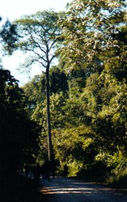
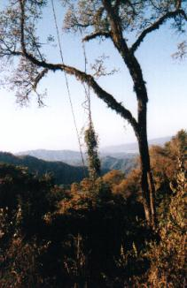
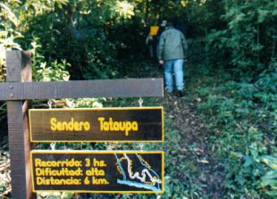
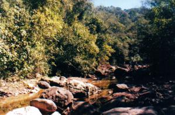
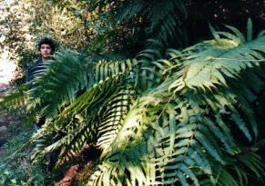
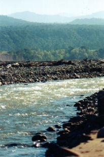
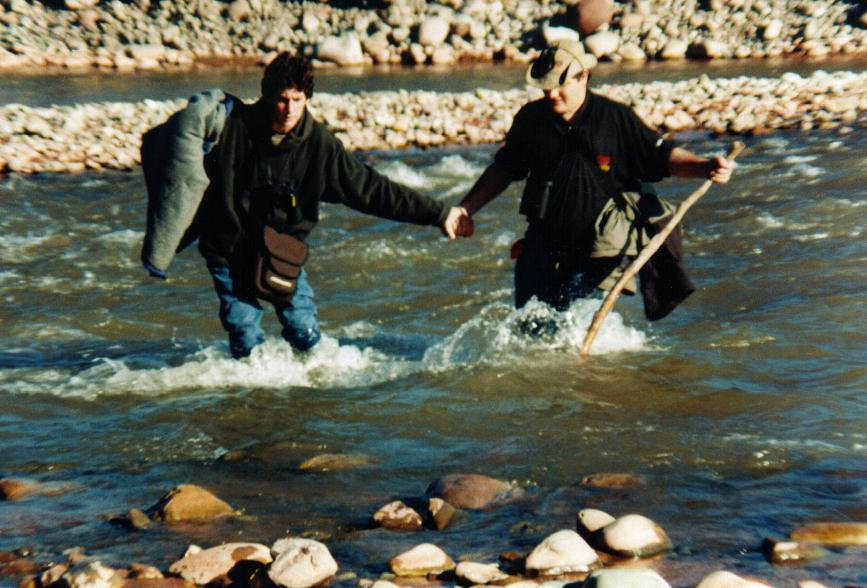

Lunes 24 a las 8:00 Recién cumplíamos un día entero en Calilegua y ya parecía que habíamos vivido aquí una semana. Después del desayuno comenzaríamos por tercera vez el ascenso hasta el Mirador. ¡Caminar este tramo ya se estaba haciendo un hábito! Hacía frío aún, así que habíamos traído la campera, a sabiendas que pronto el calor de la jornada la convertiría en lastre, y la tendríamos que cargar durante el resto de la mañana. El plan era hacer una caminata liviana, anticipando que para el día siguiente estaba planificado un recorrido que demandaría un esfuerzo intenso. ¡Que bueno! En el fondo nuestro guía tenía algo de misericordia por nuestras piernas. Pasando el Mirador llegaríamos al punto donde comienza el sendero Tataupá, que se interna en la selva y nos llevaría de regreso al campamento bajando por exuberantes valles fluviales, primero por el arroyo Negrito y luego por el río San Lorenzo. A medio kilómetro del Mirador recuerdo un avistamiento insólito: el hermoso Carpintero Lomo Blanco. Siendo la primera vez que observo de cerca uno ejemplar de este género, no reparé tanto en su parche dorsal blanco-lechoso sino en el increíble color rojo puro de la cabeza, y en su cuerpo negro azabache. Detenidos en la banquina del camino, los observadores nos agrupamos para ubicarlo semiescondido entre la vegetación. Allí, del otro lado de una cortina invisible que separaba su mundo del nuestro, internado apenas tres o cuatro metros en la selva enmarañada, recorría su medio, los troncos de arboles, aparentemente en busca de alimentos. Cien metros más adelante Nico encontró otro ejemplar, que el resto de grupo también pudo disfrutar.   Paisajes desde el camino Seguíamos siempre a lo largo del camino, en leve ascenso, acalorados. El comienzo del sendero Tataupá no parecía llegar nunca. Las aves escaseaban y el grupo comenzaba a sentir fatiga. Habíamos caminado tres horas y ya eran las 11:30 cuando finalmente apareció el cartel que buscábamos. Pero no todos lo vieron, puesto que, metros antes de llegar, nuestro guía dictaminó que ya sería tarde pretender iniciar la vuelta por el complicado sendero. El almuerzo no podía esperar y debíamos volver al campamento por la ruta más sencilla y directa: el mismo camino. Pero no todos estábamos de acuerdo, y fuimos 10 los amotinados. Es que no habíamos subido en vano hasta aquí, haber hecho semejante esfuerzo con la ilusión de volver por el encantador arroyito, para que ahora todo quede en la nada. Además, era más fácil volver por el arroyo. ¿No? El guía no parecía estar de acuerdo, pero nos autorizó la separación. Dejó a los rebeldes a cargo de sus experimentados asistentes, Diego y Kini, y el resto del grupo se marchó. Comenzaba ahora lo que debía ser la amena y deleitable bajada al camping por el sendero Tataupá. El cartel indicaba que el trayecto tenía una duración aproximada de tres horas.  Entrada al sendero Tataupá Inadvertidamente pasamos otro cartel que indicaba: "SENDERO CLAUSURADO". Seguidamente me di cuenta que, de descenso, aquí no había nada: nos internábamos por la selva en franca subida, lo que me estaba resultando extenuante. Pero la selva estaba divina, y en ese tramo observamos aves y flores hermosas. Pronto llegamos a un descenso en serio: una ladera que caía casi verticalmente. Se notaba la existencia de peldaños tallados en la tierra, pero su mal estado constituía una trampa mortal, así nos lanzamos de pié por un tobogán de tierra, mientras algunos dudaban de la conveniencia de seguir. El sendero ahora bordeaba la ladera, y brindaba una vista espléndida de la selva que se extendía eternamente hasta las montañas más altas. ¡Que lugar para observar rapaces! Luego recorría por zonas más húmedas, con helechos y cañadones de tierra donde nacían vertientes y arroyos. Esta parte era tal vez la más frondosa y atractiva de todas, pero debíamos continuar: habíamos postulado el secreto desafío de llegar al campamento antes de los volvían por el camino... Pero pronto nos enfrentamos a otra dificultad. Un desmoronamiento de barro había, literalmente, echado por tierra un tramo de la senda. Para seguir había que bajar por una pared casi vertical. Cada uno, como podía, tendría que descender este nuevo tobogán, más peligroso aún que el primero. Y una vez resuelto, no encontrábamos donde continuaba la senda, así que comenzamos a explorar. Finalmente la lógica nos propuso seguir el cauce de un pequeño arroyito, que nos internó por oscuros túneles tallados en la vegetación, rodeados en todas direcciones por helechos y culandrillos. Las fotos que tengo del lugar no hacen honor a este templo de naturaleza silvestre. El grupo avanzaba dubitativo. ¿Hacíamos bien en internarnos por aquí? En el peor caso podríamos volver al camino, pero no nos entusiasmaba ahora tener que subir todo lo que habíamos bajado... Finalmente, tras recorrer apenas 100 metros por el arroyito llegamos a un cauce más grande: era el arroyo Negrito. Celebramos el hallazgo de evidencias de civilización: otro cartel. éste nos indicaba que en una hora estaríamos en el camping. ¿Ya habíamos realizado más de la mitad del recorrido? El valle del arroyo Negrito, de unos 10 a 20 metros de ancho, sería nuestra senda obligada hasta llegar al San Lorenzo. No nos podíamos perder. La flecha apuntaba aguas abajo, como era lógico. La caminata ahora sería muy distinta: desafiando las piedras, trataríamos de no terminar con los pies en el agua. Pero había tramos con bastante agua, y entonces, a causa de pequeños tropiezos o de pisar piedras engañosas, uno a uno los integrantes iban abandonando la liga de los "secos", perdiendo la descabellada apuesta que premiaba a quienes no se mojaban. Algunos anticiparon el inevitable destino y optaron por caminar descalzos, salvando del empape a sus botas de trekking, pero yo me aferré a mantener mis zapatillas puestas, confiando en mi equilibrio y sabios conocimientos sobre estabilidad de piedras. Así terminé también, mojado, pero no sin haber dado una elocuente prueba de mi maestría en el arte de caminar un río pedregoso, gracias a un talento aprendido desde muy chico.   Dos fotos tomadas en el valle del arroyo Negrito Avanzamos hasta la primera curva del río. El valle giraba en
ángulo recto, pero las aguas no se doblegaban hasta chocar contra
el paredón formado por la montaña misma. Desaparecía
la senda y no podíamos seguir caminando por este margen, así
que debíamos cruzar. Recuerdo este cruce como uno de los más
peligrosos, especialmente para los "secos", que tuvimos que extremar nuestras
habilidades equilibristas y saltar peligrosamente para no tocar el líquido.
Luego, el río seguía en línea recta unos 200 metros
hasta llegar a otra curva hacia el lado opuesto. Nuevamente sería
necesario cruzar el cauce. La fatiga comenzó a apoderarse de nosotros. Cada uno reaccionaba de distintas maneras. Algunos fueron superados por la sed y se animaron a tomar el agua. Alguien se cayó de frente en un charco, mojando sus binoculares. Otros pedían descanso. Hubo un par de caídas importantes, pero felizmente - y milagrosamente - sin consecuencias. Yo me retrasé y, por tratar de caminar las aguas, perdí la apuesta. En realidad había optado por "sacrificar" un pié. Permitiría que se moje solamente el derecho, que utilizaría a partir de ahora como muleta viviente para cruzar los charcos más profundos, evitando el riesgo de una caída. Sentía que con un pie seco tendría aún derecho a reclamar al menos "media apuesta"... El río presentaba siempre alguna oportunidad para cruzar, generalmente haciendo un salto entre rocas grandes, y a veces con una mínima inmersión. Pero cada cruce escondía algún peligro, silencioso y mortal: el tropiezo en una piedra suelta o una patinada en el verdín podría causar una caída de consecuencias impredecibles. El riesgo estaba siempre latente, mientras que el cansancio sólo aumentaba la probabilidad de un accidente - y era razonable suponer que un rescate en ese valle podría demorar 24 horas. Entre ornitólogos nada se antepone a la observación de aves, ni siquiera las cuestiones de supervivencia que, si bien leves, enfrentábamos ahora. En la situación en que estábamos, la vuelta al campamento y a la civilización debería ser la principal "zanahoria" para seguir avanzando por el arroyo. Pero en realidad el avance y superación de la fatiga tenían una motivación muy distinta: era, sin duda, la ilusión desatada por una huella. En los márgenes del arroyo habíamos encontrado pisadas de un ave medianamente grande, y los vaticinios más esperanzados apuntaban al Hocó Oscuro, un primo cercano del Hocó Colorado, que es relativamente común Buenos Aires. Pero el Oscuro es mucho más raro, y existe únicamente en de este preciso entorno. En realidad las posibilidades de encontrar esta especie eran remotas, por que es una ave muy arisca, que se aleja preventivamente ante el más mínimo disturbio. Y la ilusión prácticamente se desvaneció cuando advertimos un par de Chiricotes, aves acuáticas que andan también por las playas y cuyas pisadas no sabíamos distinguir de las del Hocó. Pero las elusivas pisadas estaban cada vez más frescas y frecuentes. Además los ornitófilos somos, por definición, optimistas. Las curvas del río se sucedían una tras otra. En una zona abierta observamos una pareja de los enormes loros Maracaná Cuello Dorado, posados en un árbol. Pero el grupo avanzaba disperso, casi desmoralizado por la tortuosa, contradictoria e interminable senda que demarcaba el valle, y que parecía no llegar a ningún lado. Incluso, por ilógico que parezca ahora, la fatiga nos hacía comenzar a dudar si avanzábamos en la dirección correcta. ¿íbamos bien? Yo andaba rezagado, pero en un momento alcancé a los primeros del grupo, que se habían detenido sobre una enorme piedra. Presentía algo extraño. Kini y mi hijo me tenían que informar sobre un descubrimiento que les causaba sentimientos encontrados. ¿Cómo anunciar, sin lastimarme pero a la vez mostrando esa contagiosa alegría, lo que el destino les había interpuesto en su camino? ¡Ni más ni menos que un Hocó Oscuro! La expresión de mi hijo, colmada de autosatisfacción y a la vez mostrando pena por lo que me perdí de ver a causa de mi retraso, me confirmaba que no era una broma. A medida que se acercaban los demás integrantes, uno a uno les comunicamos la triste alegría. El plan ahora sería de avanzar en lo posible más juntos, con la esperanza que se presente nuevamente el Hocó, y todos podamos verlo. El ansiado avistaje no se repitió, pero aún así mi alegría desbordaba por que Nico había observado una especie rara, una "figurita difícil" que siempre había ansiado ver. ¡Que triunfo para los dos! Vuelta tras vuelta, curva tras curva, el río San Lorenzo siempre parecía estar allí, tras el siguiente codo, y siempre terminábamos vencidos por la realidad. ¡Tanto habíamos caminado! Creo que de haber sido explorador o cartógrafo hubiera estimado nuestra posición en alguna parte de Tucumán. Ya eran las 16 horas y la fatiga e inseguridad nos abrumaba. La cámara de fotos y el binocular pesaban como televisores. Mi campera, que venía cargando en mi brazo, parecía haberse convertido en acolchado de dos plazas. Tenía sed y hambre, y tras tantas desilusiones no podía esperanzarme de llegar pronto al San Lorenzo. De una cosa estábamos seguros: el otro grupo habría llegado al campamento hace rato, y ya habrían almorzado. Facundo... ¿nos calentarás los restos? Finalmente llegamos al gran río. Nos había llevado más de 5 horas en hacer lo que el primer cartel indicaba que demoraba tres. Felices, en buen estado, y estimulados por el desafío que este reducido grupo había enfrentado tan exitosamente, salimos del angosto y adorable valle del arroyo Negrito para avanzar ahora sobre el anchísimo campo de piedras del río San Lorenzo. A lo lejos divisamos la figura de nuestro guía quien, posado en una enorme piedra, miraba hacia nosotros, pero no nos veía por que estabamos directamente en contra del sol. Normalmente estaría buscando aves. Pero esta vez era distinto: carcomido por la preocupación que le causaba nuestra tardanza, Germán había venido hasta el río para buscarnos... Para nuestro grupito la presencia de Germán en esa roca fue no sólo reconfortante, sino que nos permitió valorizar aún más nuestra pequeña pero inolvidable hazaña. Pero aún quedaba un obstáculo: la confluencia del arroyo con el río se producía de tal manera que debíamos cruzar dos veces el San Lorenzo para llegar al lugar donde estaba Germán. Inspeccionamos el curso de agua. El cauce parecía demasiado ancho, profundo y caudaloso para cruzar. Surgieron diversas ideas. ¿Volvemos atrás por el mismo camino: el arroyo Negrito y el sendero Tataupá? ¿Construimos una balsa? ¿Hacemos una "cadena humana"? La única solución razonable era cruzar a pie, pero iba a requerir un poco de audacia y primero deberíamos hacer de "baqueanos" para ubicar el punto más conveniente de cruce.  La fuerte correntada que nos separaba del campamento Así es como Fede tomó cartas: se arremangó los pantalones y caminó. Fue el primero en llegar al otro lado. Después los demás, a veces de a uno, a veces de a dos, nos aventuramos a cruzar, con nuestro calzado puesto por las dudas. Primero cruzamos a la margen sur, y luego, aguas más abajo, volvimos a cruzar de nuevo para regresar a la margen izquierda, desde donde podíamos llegar fácilmente al camping.  Nico y Fede cruzando el caudaloso San Lorenzo en tándem Tenía ambas zapatillas empapadas. ¡Perdí la apuesta! Al acercarme al camping me cruzaba con integrantes que habían vuelto por el otro camino. Me miraban casi con admiración, como si fuese un atleta o competidor que había terminado una epopeya riesgosa y extenuante. Es que así fue. Me atrevo a llamarlo "Eco-Challenge Calilegua 2000", antítesis de la relajada jornada que habían propuesto los organizadores. ¡Qué trajín nos esperaba para mañana! Ya de regreso al campamento nos ocupamos de tender las prendas mojadas. Almorzamos a las 17:30, merendamos a las 18:00, y cenamos una hora después. En la carpa fue otra noche con bastante frío. Las emociones y
alegrías del aventurado día pronto cedieron ante el sueño... * * * |